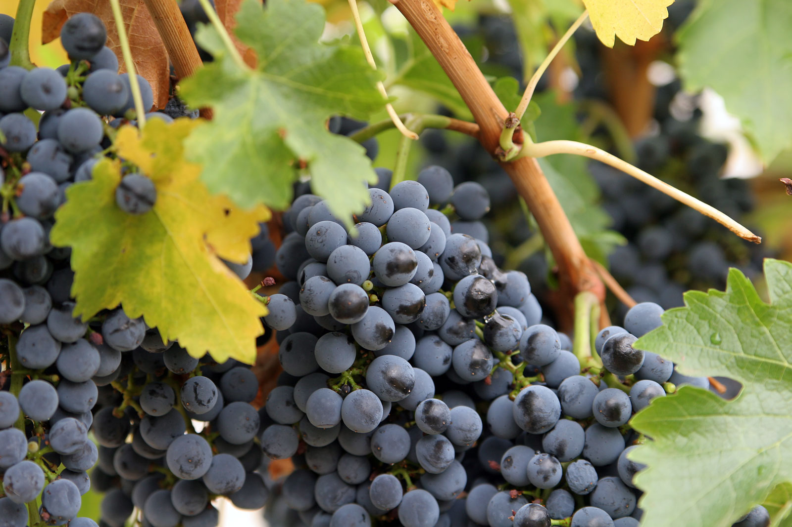

我最喜歡的水果-葡萄
介紹
古作蒲陶，是葡萄屬植物的通稱，是一類常見的落葉木質藤本植物，其果實是漿果類水果。
西方主要用來釀造葡萄酒，東方則是習慣直接食用並培育出口感較佳的品種。
此外，葡萄還可以用以生產果醬、果汁、果凍、葡萄籽精華素、葡萄乾、醋、葡萄籽油等等。葡萄的生長沒有呼吸躍變(非更年性)，其果實成簇聚集在一起。
葡萄的生長特性
葡萄種植後2～3年結果，生產期可達20年。
生長期要求溫暖、陽光充足、夏季長期乾燥等，最適宜溫度為25～30℃。氣溫高、晝夜溫差大，養分積累多、果實著色好、含糖量高。
葡萄果實生長可以以轉色期為轉折點分為兩個時期。轉色期之前是果實的形成時期，主要是酸的積累，果實內含有大量蘋果酸和單寧；轉色期之後是果實的成熟時期，主要是累積糖份。

分布
起源於地中海、黑海和裏海沿岸。
栽培最多的國家為西班牙、義大利、蘇聯和法國；其次為土耳其、葡萄牙、阿根廷、羅馬尼亞和美國等。中國主產區在新疆，約占全國栽培面積30％以上。
資料來源: